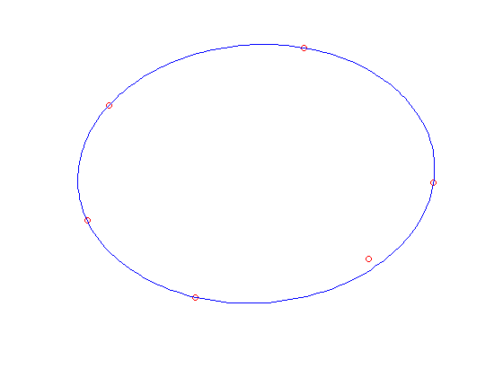

% Section 8.4.1, Boyd & Vandenberghe "Convex Optimization" % Almir Mutapcic - 10/05 % (a figure is generated) % % Given a finite set of points x_i in R^2, we find the minimum volume % ellipsoid (described by matrix A and vector b) that covers all of % the points by solving the optimization problem: % % maximize log det A % subject to || A x_i + b || <= 1 for all i % % CVX cannot yet handle the logdet function, but this problem can be % represented in an equivalent way as follows: % % maximize det(A)^(1/n) % subject to || A x_i + b || <= 1 for all i % % The expression det(A)^(1/n) is SDP-representable, and is implemented % by the MATLAB function det_rootn(). % Generate data x = [ 0.55 0.0; 0.25 0.35 -0.2 0.2 -0.25 -0.1 -0.0 -0.3 0.4 -0.2 ]'; [n,m] = size(x); % Create and solve the model cvx_begin variable A(n,n) symmetric variable b(n) maximize( det_rootn( A ) ) subject to norms( A * x + b * ones( 1, m ), 2 ) <= 1; cvx_end % Plot the results clf noangles = 200; angles = linspace( 0, 2 * pi, noangles ); ellipse = A \ [ cos(angles) - b(1) ; sin(angles) - b(2) ]; plot( x(1,:), x(2,:), 'ro', ellipse(1,:), ellipse(2,:), 'b-' ); axis off
Calling sedumi: 39 variables, 24 equality constraints ------------------------------------------------------------ SeDuMi 1.21 by AdvOL, 2005-2008 and Jos F. Sturm, 1998-2003. Alg = 2: xz-corrector, Adaptive Step-Differentiation, theta = 0.250, beta = 0.500 Put 2 free variables in a quadratic cone eqs m = 24, order n = 27, dim = 48, blocks = 10 nnz(A) = 66 + 0, nnz(ADA) = 354, nnz(L) = 189 it : b*y gap delta rate t/tP* t/tD* feas cg cg prec 0 : 1.05E+00 0.000 1 : 4.83E-02 3.88E-01 0.000 0.3694 0.9000 0.9000 3.93 1 1 8.7E-01 2 : -6.52E-01 1.49E-01 0.000 0.3837 0.9000 0.9000 1.02 1 1 4.1E-01 3 : -2.07E+00 4.01E-02 0.000 0.2693 0.9000 0.9000 0.22 1 1 1.7E-01 4 : -2.66E+00 2.82E-03 0.000 0.0703 0.9900 0.9900 0.83 1 1 1.3E-02 5 : -2.68E+00 5.87E-04 0.000 0.2083 0.9000 0.9000 1.00 1 1 2.7E-03 6 : -2.68E+00 2.73E-05 0.000 0.0465 0.9900 0.9900 1.00 1 1 1.4E-04 7 : -2.68E+00 7.85E-07 0.000 0.0287 0.9905 0.9900 1.00 1 1 1.0E-05 8 : -2.68E+00 1.91E-08 0.000 0.0243 0.9900 0.9820 1.00 1 1 2.4E-07 9 : -2.68E+00 3.95E-10 0.000 0.0207 0.9901 0.9900 1.00 2 2 5.2E-09 iter seconds digits c*x b*y 9 0.1 Inf -2.6839853868e+00 -2.6839853740e+00 |Ax-b| = 4.4e-09, [Ay-c]_+ = 2.6E-09, |x|= 1.0e+01, |y|= 2.5e+00 Detailed timing (sec) Pre IPM Post 1.000E-02 5.000E-02 1.000E-02 Max-norms: ||b||=1, ||c|| = 1, Cholesky |add|=0, |skip| = 0, ||L.L|| = 61.2392. ------------------------------------------------------------ Status: Solved Optimal value (cvx_optval): +2.68399
